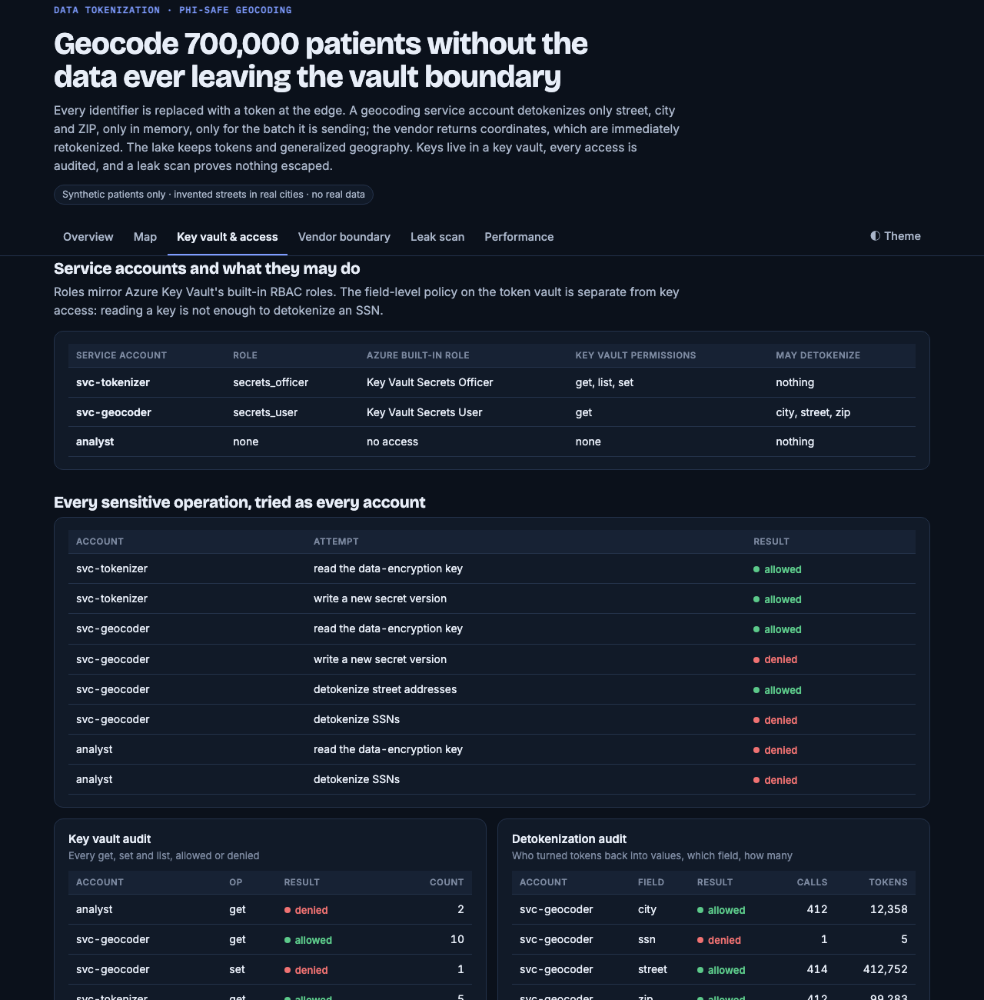

The problem
Mapping patients needs their addresses geocoded: turned into coordinates, counties and map cells. The best geocoders are outside vendors, and an address is protected health information. Sending a whole patient table out is not acceptable; not geocoding at all leaves access-to-care and outreach questions unanswered. The job is to get the coordinates while the vendor sees only what it must, and nothing in the data lake can identify anyone.
How it works
- Tokenize at the edge. Every identifier (MRN, name, birth date, SSN, phone, street, city, ZIP) becomes a keyed HMAC token. The same value always gives the same token, so the lake still joins and counts.
- Keep it reversible, but locked. Each distinct value is stored once as AES-256-GCM ciphertext in a token vault, under a key that lives only in the key vault.
- De-duplicate. Households share an address, so 700,000 patients become 411,820 unique addresses before anything is sent.
- Detokenize inside, for one batch. The geocoding service account turns street, city and ZIP back into text in memory, 1,000 addresses at a time, and nothing else.
- Call the vendor with the minimum necessary. Street, city, state, ZIP, authenticated with an API key read from the key vault; transient errors retried with backoff.
- Retokenize and generalize. Precise coordinates become a token on arrival; the lake keeps county, ZIP3 and a 5 km grid cell, and the map hides cells under 11 patients.
Key vault and service accounts
| Service account | Azure built-in role | Key vault | May detokenize |
|---|---|---|---|
| svc-tokenizer | Key Vault Secrets Officer | get, list, set (read and write) | nothing |
| svc-geocoder | Key Vault Secrets User | get (read only) | street, city, ZIP |
| analyst | none | none | nothing |
Three secrets live in the vault: the tokenization key, the data-encryption key (versioned and rotated every run) and the vendor's API key. Every run tries each sensitive operation as each account; the four outside policy (the geocoder writing a secret or detokenizing SSNs, the analyst reading a key or detokenizing) are denied and land in the audit log.

How I proved nothing leaked
Design decisions
- Keyed hashes, not plain hashes. There are only so many birth dates and ZIP codes; a plain hash of one can be guessed. HMAC needs the key.
- Field-scoped tokens. The field name is part of the input, so a street token can't be passed off as a ZIP token to get it detokenized.
- Two keys. One makes tokens, one makes them reversible, so the encryption key can rotate without touching the lake.
- Pluggable services. The same code runs against Azure Key Vault (managed identity, built-in RBAC roles) and the US Census Geocoder with one setting each.
Limits I'd state up front
- The local key vault is a development stand-in; production keys belong in a managed vault or HSM.
- ZIP3 is Safe Harbor-compliant only where the area has more than 20,000 people; a production version would roll small areas up.
- Detokenized batches live in process memory; a hardened version would run the job in an isolated worker.
Tech: Python · pandas · DuckDB · cryptography (AES-256-GCM, HMAC-SHA256) · Azure Key Vault SDK · REST batch API · Plotly · pytest